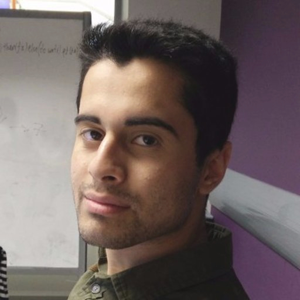

I am a PhD student at the Information Security Research Group of the Department of Computer Science at University College London. I joined in October 2016. My supervisors are Professor George Danezis and Dr Sarah Meiklejohn.
My research interests include the intersections of peer-to-peer systems, distributed ledgers and information security.
Email: m.albassam@cs.ucl.ac.uk
Links: Personal Homepage / Twitter / GitHub / LinkedIn
Contour: A Practical System for Binary Transparency
Mustafa Al-Bassam and Sarah Meiklejohn.
International Workshop on Cryptocurrencies and Blockchain Technology (CBT), 2018.
Chainspace: A Sharded Smart Contracts Platform
Mustafa Al-Bassam, Alberto Sonnino, Shehar Bano, Dave Hrycyszyn and George Danezis.
The Network and Distributed System Security Symposium (NDSS), 2018.
Who Am I? Secure Identity Registration on Distributed Ledgers
Sarah Azouvi, Mustafa Al-Bassam and Sarah Meiklejohn.
International Workshop on Cryptocurrencies and Blockchain Technology (CBT), 2017.
SCPKI: A Smart Contract-based PKI and Identity System
Mustafa Al-Bassam.
ACM Workshop on Blockchain, Cryptocurrencies and Contracts (BCC), 2017.
Fraud Proofs: Maximising Light Client Security and Scaling Blockchains with Dishonest Majorities
Mustafa Al-Bassam, Alberto Sonnino and Vitalik Buterin.
Airtnt: Fair Exchange Payment for Outsourced Secure Enclave Computations
Mustafa Al-Bassam, Alberto Sonnino, Michał Król and Ioannis Psaras.
VAMS: Verifiable Auditing of Access to Confidential Data
Alexander Hicks, Vasilis Mavroudis, Mustafa Al-Bassam, Sarah Meiklejohn and Steven J. Murdoch.
SoK: Consensus in the Age of Blockchains
Shehar Bano, Alberto Sonnino, Mustafa Al-Bassam, Sarah Azouvi, Patrick McCorry, Sarah Meiklejohn and George Danezis.